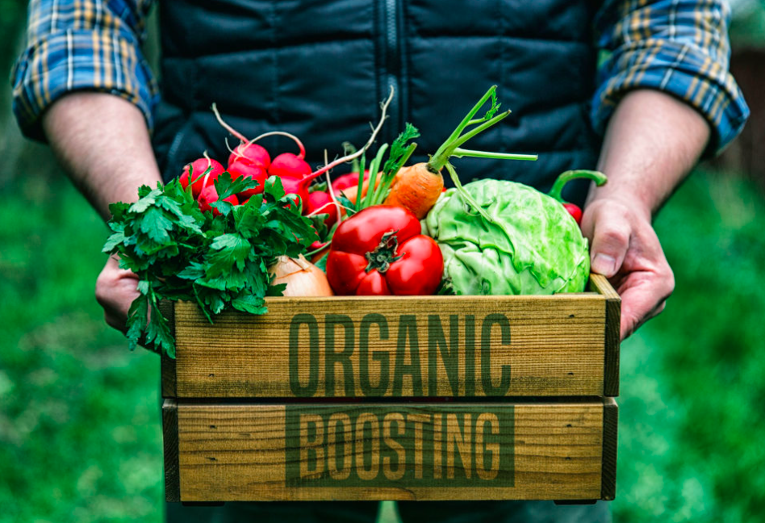
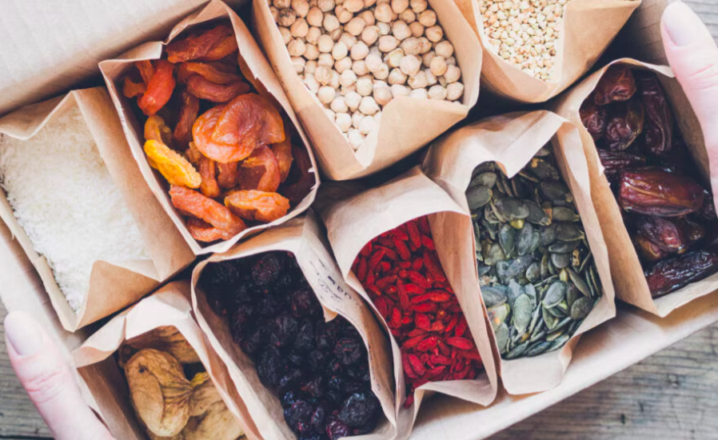

Blog
¡El conocimiento es poder!, somos fieles creyentes de que entre más sepas de los fermentados, más te gustarán nuestros productos, por ello te dejamos novedades y noticias sobre estos superalimentos.
CÓMO FORTALECER TUS DEFENSAS DE MANERA NATURAL
La clave para fortalecer tus defensas de manera natural es… LA ALIMENTACIÓN NATURAL y variada....
En el último tiempo nos han bombardeado con información trágica: “¡este es el peor
invierno! ¡Los virus están peor que nunca!”, y suma y sigue…
Pero ¿has escuchado o leído en algún lado cuál es la clave para hacer que tu sistema inmune sea
SUPERMEGA FUERTE? Yo creo que ahí es donde tenemos que poner el foco… En la educación.
EL BUEN DORMIR: Dormir bien es fundamental para mantener un sistema inmunológico fuerte y eficiente.
Durante el sueño, el cuerpo realiza una serie de procesos vitales que ayudan a reparar tejidos,
producir hormonas y fortalecer las defensas del organismo. El sueño profundo, en particular, es
crucial para la producción de citoquinas, proteínas que desempeñan un papel clave en la respuesta
inmune, ayudando al cuerpo a combatir infecciones, inflamaciones y el estrés. La falta de sueño, por
otro lado, puede debilitar el sistema inmunológico, haciéndonos más susceptibles a enfermedades y
dificultando la recuperación cuando estamos enfermos. Además, un descanso insuficiente puede afectar
negativamente la producción de anticuerpos y la respuesta del cuerpo a las vacunas. Por lo tanto,
garantizar un sueño de calidad y en cantidad suficiente es esencial para mantener las defensas altas
y proteger nuestra salud.
Sigue estos consejos para mejorar tu calidad de sueño: Mantén un horario regular, crea una rutina de
relajación antes de dormir, optimiza tu entorno de sueño,limita la exposición a pantallas antes de
dormir, controla la ingesta de alimentos y bebidas, haz ejercicio, regularmente, gestiona el estrés
y la ansiedad, además de exponerte a la luz natural durante el día.
EL PODER TERAPÉUTICO DE LOS ALIMENTOS: La frase “Que tu alimento sea tu medicina” es muy cierta,
pero aún más importante es entender que los alimentos son una poderosa herramienta de prevención.
Los alimentos naturales están llenos de nutrientes esenciales que fortalecen nuestro sistema
inmunológico frente a diversas amenazas.
Principales nutrientes:
Vitamina C: Conocida como la reina de los resfriados, es fundamental para fortalecer las defensas.
La encuentras en cítricos como naranja y pomelo, kiwi, granada, y vegetales como el brócoli, repollo
y pimentón rojo. Comienza tu día con fruta e incluye ensaladas ricas en vitamina C en tus comidas.
Antioxidantes: Incluyen vitamina C, vitamina E, polifenoles y flavonoides, que protegen nuestras
células contra la inflamación y oxidación causada por virus y bacterias. Una dieta rica y variada en
frutas, verduras, frutos secos y semillas te asegura una buena dosis de antioxidantes.
Omega 3: Una grasa esencial con propiedades antiinflamatorias que apoya al sistema inmune. Se
encuentra en pescados grasos como sardinas y anchoas, en algas, semillas de chía y linaza, y en
nueces. Es crucial incluirlo diariamente en tu dieta, ya que el cuerpo no lo produce.
Alimentos fermentados: Ricos en probióticos, esenciales para una microbiota saludable, lo que mejora
la digestión y la absorción de nutrientes clave para tus defensas.
Vitamina D: Fundamental para el sistema inmunológico, pero difícil de obtener solo a través de la
alimentación o la exposición solar. Es recomendable medir tus niveles y considerar un suplemento si
es necesario.
Mantener una dieta balanceada y rica en estos nutrientes es clave para apoyar tu salud y prevenir
enfermedades.
¿PROBIÓTICOS NATURALES O EN CÁPSULA?
Los probióticos son microorganismos vivos, principalmente bacterias y levaduras, que cuando se consumen en cantidades adecuadas, ofrecen beneficios para la salud...
Estos probióticos son "microbios buenos" que ayudan a mantener el equilibrio de la
microbiota intestinal, que es esencial para una buena digestión, la absorción de nutrientes, y la
protección contra patógenos dañinos. Además, los probióticos pueden fortalecer el sistema
inmunológico, mejorar la salud intestinal y contribuir al bienestar general.
Probióticos naturales para todos los gustos:
Los probióticos naturales son una opción deliciosa, económica y efectiva para mejorar la salud.
Estos alimentos fermentados contienen una gran diversidad de microorganismos que, aunque no siempre
tienen funciones específicas, ofrecen beneficios generales para el sistema inmunológico y el
equilibrio intestinal. Su papel es principalmente preventivo.
Además de los probióticos, los alimentos fermentados son ricos en compuestos bioactivos como
vitaminas, prebióticos y polifenoles, que también contribuyen a la salud.
Hay una amplia variedad de opciones para todos los gustos: vegetales, animales, con o sin lácteos,
dulces, salados, y más. Sin embargo, es importante saber que no todos los alimentos probióticos son
iguales. La diferencia clave radica en los tipos de microorganismos que contienen, lo cual depende
del tipo de fermentación (alcohólica, láctica, acética, etc.) que se utiliza en su elaboración.
En una cápsula probiótica, generalmente encuentras una combinación de microorganismos beneficiosos,
principalmente bacterias y, a veces, levaduras. Las bacterias más comunes son las de los géneros
Lactobacillus y Bifidobacterium, que son conocidos por su capacidad para mejorar la salud intestinal
y fortalecer el sistema inmunológico. Algunas cápsulas también pueden contener otros tipos de
bacterias como Streptococcus thermophilus o Saccharomyces boulardii, una levadura beneficiosa.
Además de los microorganismos, la cápsula puede contener:
Prebióticos: Fibras que sirven de alimento para los probióticos, ayudando a su supervivencia y
eficacia en el intestino.
Excipientes: Sustancias inactivas que ayudan a mantener la estabilidad de los probióticos durante el
almacenamiento.
Enzimas digestivas: A veces se añaden para mejorar la digestión y el funcionamiento del sistema
gastrointestinal.
Sustancias protectoras: Como la goma arábiga o la inulina, que protegen a los probióticos de la
acidez estomacal, permitiendo que lleguen al intestino en mayores cantidades.
Cada cápsula está diseñada para liberar estos microorganismos vivos en el intestino, donde pueden
colonizar y ejercer sus efectos beneficiosos.
¿Cuál es mejor?
Si buscas un tratamiento específico o una dosis alta de probióticos, o si tienes dificultades para
incluir alimentos fermentados en tu dieta, las cápsulas probióticas pueden ser más adecuadas.
Si prefieres un enfoque más natural y diverso para apoyar tu salud general y disfrutas de los
alimentos fermentados, estos pueden ser la mejor opción.
En muchos casos, una combinación de ambos puede ser beneficiosa, aprovechando la precisión de las
cápsulas probióticas y la riqueza nutricional de los alimentos fermentados.
TENDENCIA 2024: ALIMENTOS FUNCIONALES
La creciente demanda de alimentos con valor añadido responde a la necesidad de combatir los efectos negativos de un estilo de vida moderno, caracterizado por el sedentarismo y una dieta poco saludable
A medida que una proporción cada vez mayor de la población enfrenta desafíos de salud,
crece el interés en productos que brinden beneficios funcionales.
Esto se refleja en las preferencias de los consumidores, ya que a nivel mundial poco más de la mitad
de ellos eligen alimentos para mejorar el rendimiento diario, el estado de ánimo, el bienestar
mental y un buen sueño.
A medida que la preferencia por los alimentos funcionales va ganando espacio entre la población
adulta y también joven, aparecen nuevas tendencias con opciones alimentarias reducidas en azúcares
añadidos, en sodio, con vitaminas y minerales para mantener un estilo de vida saludable.
Es así como un artículo del Institute of Food Technologists (IFT), una organización mundial que
impulsa el avance de la ciencia de los alimentos,presenta las cinco tendencias que prevalecerán en
este mercado durante este año:
1. Productos diseñados para mejorar el rendimiento diario: Compartir
El mercado mundial de alimentos y bebidas funcionales va en aumento. Se estima que alcanzará un
valor de 364 mil 180 millones de dólares en 2024, esta cifra se duplicará en el 2032 para llegar a
los 793 mil 600 millones de dólares, según un reporte de Fortune Business Insights, la firma de
análisis de investigación de mercados.
La creciente demanda de alimentos con valor añadido responde a la necesidad de combatir los efectos
negativos de un estilo de vida moderno, caracterizado por el sedentarismo y una dieta poco saludable
que ha provocado el aumento de enfermedades como diabetes, obesidad y afecciones cardíacas.
El Atlas Mundial de la Obesidad 2023 predice que para el año 2035, más de la mitad de la población
mundial, o 4 mil millones de personas, sufrirán de obesidad o sobrepeso. El costo anual por tratar
afecciones relacionadas con esta enfermedad ascenderá a 4 billones de dólares.
“A medida que una proporción cada vez mayor de la población enfrenta desafíos de salud, crece el
interés en productos que brinden beneficios funcionales”, cita en un artículo el Institute of Food
Technologists (IFT), una organización mundial que impulsa el avance de la ciencia de los alimentos.
Esto se refleja en las preferencias de los consumidores, ya que a nivel mundial poco más de la mitad
de ellos eligen alimentos para mejorar el rendimiento diario, el estado de ánimo, el bienestar
mental y un buen sueño, según HealthFocus.
Ante esta tendencia, añade el IFT, más del 50 por ciento de las empresas alimentarias de Estados
Unidos están reformulando sus productos para ofrecer beneficios para la salud. El 22 por ciento
planea hacerlo en los próximos dos años.
Tendencias funcionales que marcan este 2024:
A medida que la preferencia por los alimentos funcionales va ganando espacio entre la población
adulta y también joven, aparecen nuevas tendencias con opciones alimentarias reducidas en azúcares
añadidos, en sodio, con vitaminas y minerales para mantener un estilo de vida saludable.
Por ello, el IFT presenta las cinco tendencias que prevalecerán en este mercado durante este año:
1. Productos diseñados para mejorar el rendimiento diario: Los potenciadores de hidratación,
rendimiento y energía fueron las categorías de ingredientes funcionales más vendidos en canales de
múltiples puntos de venta el año 2023.
Mientras que los ingredientes que más crecieron fueron la proteína, la cafeína, la creatina, las
vitaminas B, los multiminerales, el guaraná, el aminoácido teanina y los probióticos.
2. Bebidas y alimentos que protegen el corazón: La necesidad de mantener saludable el corazón
continuó impulsando las ventas de alimentos y bebidas, generando un aumento astronómico de ventas en
canales multiplataformas.
En tanto, las ventas de alimentos y bebidas con bajo contenido de sodio aumentaron 6 por ciento el
año pasado; las ventas de productos con un contenido muy bajo en sodio aumentaron un 8 por ciento.
3. Alimentos enriquecidos con vitaminas y minerales: Según el informe de bienestar de Hartman, siete
de cada diez consumidores buscan activamente estos productos y están dispuestos a pagar más por
ellos.
Esta tendencia se refleja en las decisiones de compra, pues 44 por ciento de los consumidores optan
por yogures fortificados con proteínas o vitaminas, el 40 por ciento elige jugos enriquecidos y 22
por ciento prefiere productos para untar con alto contenido de omega-3, según datos del Nutrition
Business Journal.
El Consejo Internacional de Información Alimentaria asegura que dos tercios de los consumidores
intentan ingerir más proteínas, seis de cada 10 más fibra y vitamina D, la mitad más calcio y
vitamina B12, y cuatro de cada 10 más potasio, hierro y ácido fólico.
Los consumidores obtienen la mayor parte de sus proteínas y fibra de los alimentos, la mayor parte
de su vitamina D, vitamina B12 y ácido fólico proviene de suplementos, lo que representa una
oportunidad perdida para los desarrolladores de productos alimenticios.
4. Alimentos para el envejecimiento más saludable: La salud mental se ha convertido en la principal
preocupación de los consumidores estadounidenses de todas las edades, superando incluso a la salud
física general, según HealthFocus.
Mantener la salud física y seguir con las actividades diarias al envejecer son la segunda y tercera
prioridad en la tendencia global hacia un estilo de vida saludable, mientras que la salud del
corazón está en cuarto lugar. Los jóvenes de 18 a 29 años son los más preocupados por estos temas.
5. Decisiones conscientes, compras sostenibles: La venta de productos con etiquetas de "criados y
alimentados con pastos" ha crecido. Según Nutrition Business Journal, el 40% de los consumidores
considera que la falta de ingredientes responsables limita su compra, y un tercio cree que los
alimentos producidos con prácticas agrícolas regenerativas son más nutritivos que los
convencionales.